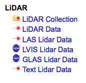

[ht::head {Managing LiDAR Data in NLAS/RAMADDA}]
There are two main types of LiDAR related entries you can create.
The first is the LiDAR Data type. Entries of this type refer to a
single LiDAR data file.
You can upload a file directly to RAMADDA:
-
Navigate to the Folder you want to upload the file to
-
From the File menu select "New Entry".
- Select an appropriate LiDAR Data type:

There is no specific functionality associated with the
LAS, LVIS and GLAS entry types. If you have this type of data
you could just select "LiDAR Data". But, specifying the type
would allow you to search for files of particular types.
See below for more information regarding
supported file formats.
-
Now that you have selected the type you can upload the file
through the next form.
See the Harvester section
to find out how to automate this process.
A LiDAR Data type in RAMADDA provides a number of services (viewing, data access, etc)
The LiDAR Collection type is used for aggregating a set of LiDAR Data entries
and providing the NLAS data access services (conversion, subset, etc) to the whole
collection.
Furthermore, the LiDAR Data entries are not accessed directly
from queries through the NLAS API from external portals (e.g., Open Topography).
The LiDAR Collection entries are what is accessed by external portals and through
the top-level NLAS search UI.
So, if you want to make data collections available to OpenTopography
then create a LiDAR Collection folder and add the LiDAR Data to it.
Note: When a LiDAR data file is ingested into RAMADDA its spatial bounds is extracted and also an
concave bounding polygon is determined. The polygon is stored as a metadata element associated with the
entry. If you want to copy the polygon metadata from the LiDAR data entry to its parent LiDAR collection
then go to the [ht::menu Edit {Edit Properties}] menu of the data file entry. Check on the polygon property and
select "Add selected to parent folder"
[ht::foot]